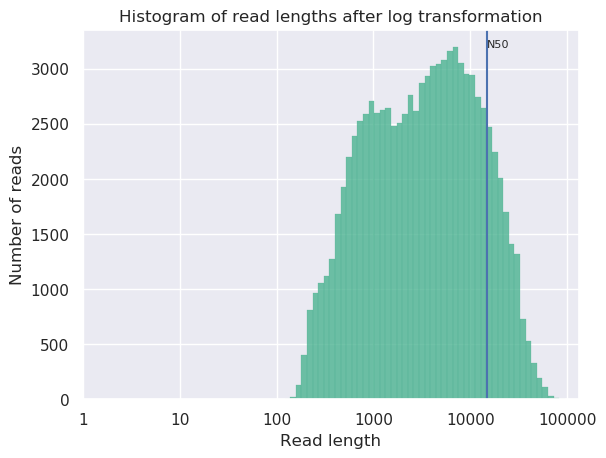
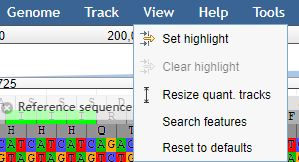

Genome Assembly of MRSA using Oxford Nanopore MinION Data
 Bazante Sanders
Bazante Sanders Miaomiao Zhou
Miaomiao Zhou Saskia Hiltemann
Saskia Hiltemann Helena Rasche
Helena RascheOverview
Questions:Objectives:
How to check the quality of the MinION data?
How to perform an assembly with MinION data?
What species do I have and what is its sequence type?
Which resistance genes are on my genome?
Where are the genes located on my genome?
Requirements:
Assess your data on quality and quantity
Assemble a genome
Assess your assembly quality
Assess presence of antimicrobial resistance genes
Perform a species identification and MLST typing
Search for resistance genes on the assembly
Find a gene on your genome using Prokka + JBrowse
- Introduction to Galaxy Analyses
- Sequence analysis
- Quality Control: slides slides - tutorial hands-on
Time estimation: 2 hoursSupporting Materials:Last modification: Mar 24, 2021
 Questions:
Questions:
Introduction
In this training you’re going to make an assembly of data produced by “Complete Genome Sequences of Eight Methicillin-Resistant Staphylococcus aureus Strains Isolated from Patients in Japan” from Hikichi et al. 2019 which describes:
Methicillin-resistant Staphylococcus aureus (MRSA) is a major pathogen causing nosocomial infections, and the clinical manifestations of MRSA range from asymptomatic colonization of the nasal mucosa to soft tissue infection to fulminant invasive disease. Here, we report the complete genome sequences of eight MRSA strains isolated from patients in Japan.
Agenda
In this tutorial, we will cover:
Background
Sequencing (determining of DNA/RNA nucleotide sequence) is used all over the world for all kinds of analysis. The product of these sequencers are reads, which are sequences of detected nucleotides. Depending on the technique these have specific lengths (30-500bp) or using Oxford Nanopore Technologies sequencing have much longer variable lengths.
Nanopore sequencing
Nanopore sequencing has several properties that make it well-suited for our purposes
- Long-read sequencing technology offers simplified and less ambiguous genome assembly
- Long-read sequencing gives the ability to span repetitive genomic regions
- Long-read sequencing makes it possible to identify large structural variations
")
When using Oxford Nanopore Technologies (ONT) sequencing, the change inelectrical current is measured over the membrane of a flow cell. Whennucleotides pass the pores in the flow cell the current change is translated(basecalled) to nucleotides by a basecaller. A schematic overview is given inthe picture above.
When sequencing using a MinIT or MinION Mk1C, the basecalling software ispresent on the devices. With basecalling the electrical signals are translatedto bases (A,T,G,C) with a quality score per base. The sequenced DNA strand willbe basecalled and this will form one read. Multiple reads will be stored in afastq file.
hands_on Hands-on: Data upload
- Create a new history for this tutorial
Import Tool: upload1 the files from Zenodo or from the shared data library
https://zenodo.org/record/4534098/files/DRR187567.fastq.bz2Tip: Importing via links
- Copy the link location
Open the Galaxy Upload Manager (galaxy-upload on the top-right of the tool panel)
- Select Paste/Fetch Data
Paste the link into the text field
Press Start
Close the window
- By default, Galaxy uses the URL as the name, so rename the files with a more useful name.
Tip: Importing data from a data library
As an alternative to uploading the data from a URL or your computer, the files may also have been made available from a shared data library:
- Go into Shared data (top panel) then Data libraries
- Navigate to the correct folder as indicated by your instructor
- Select the desired files
- Click on the To History button near the top and select as Datasets from the dropdown menu
- In the pop-up window, select the history you want to import the files to (or create a new one)
- Click on Import
Convert the datatype of this output to uncompress it
Tip: Converting the file format
- Click on the galaxy-pencil pencil icon for the dataset to edit its attributes
- In the central panel, click on the galaxy-gear Convert tab on the top
- Select
Convert compressed to uncompressed- Click the Convert datatype button
Rename the dataset to just the sequence run ID:
DRR187567Tip: Renaming a dataset
- Click on the galaxy-pencil pencil icon for the dataset to edit its attributes
- In the central panel, change the Name field to
DRR187567- Click the Save button
Tag the dataset
#unfilteredTip: Adding a tag
- Click on the dataset
- Click on galaxy-tags Edit dataset tags
Add a tag starting with
#Tags starting with
#will be automatically propagated to the outputs of tools using this dataset.- Check that the tag is appearing below the dataset name
View galaxy-eye the renamed file
question Question
- What are the 4 main features of each read in a fastq file.
- What is the name of your first read?
solution Solution
The following:
- A
@followed by a name and sometimes information of the read- A nucleotide sequence
- A
+(optional followed by the name)- The quality score per base of nucleotide sequence (Each symbol represents a quality score, which will be explained later)
DRR187567.1
Quality Control
When assessing the fastq files all bases had their own quality (or Phred score) represented by symbols. You can read more in our dedicated Quality Control Tutorial.
To assess the quality by hand would be too much work. That’s why tools like NanoPlot or FastQC are made, which will generate a summary and plots of the data statistics. NanoPlot is mainly used for long-read data, like ONT and PACBIO and FastQC for short read, like Illumina and Sanger.
Depending on the analysis it could be possible that a certain quality or length is needed. The reads can be filtered using the tool Filtlong. In this training all reads below 1000bp will be filtered.
Before doing any assembly, the first questions you should ask about your input reads include:
- What is the coverage of my genome?
- How good are my reads?
- Do I need to ask/perform for a new sequencing run?
- Is it suitable for the analysis I need to do?
hands_on Hands-on: QC & Filtering
- filtlong Tool: toolshed.g2.bx.psu.edu/repos/iuc/filtlong/filtlong/0.2.0 with the following parameters:
- param-file “Input FASTQ”:
DRR187567(output of Convert compressed file to uncompressed. tool)- In “Output thresholds”:
- “Min. length”:
1000Rename the dataset to
DRR187567-filteredTip: Renaming a dataset
- Click on the galaxy-pencil pencil icon for the dataset to edit its attributes
- In the central panel, change the Name field to
DRR187567-filtered- Click the Save button
Tag the dataset
#filteredTip: Adding a tag
- Click on the dataset
- Click on galaxy-tags Edit dataset tags
Add a tag starting with
#Tags starting with
#will be automatically propagated to the outputs of tools using this dataset.- Check that the tag is appearing below the dataset name
- Nanoplot Tool: toolshed.g2.bx.psu.edu/repos/iuc/nanoplot/nanoplot/1.28.2+galaxy1 with the following parameters:
- “Select multifile mode”:
batch
- “Type of the file(s) to work on”:
fastq
- param-files “files”: both
DRR187567andDRR187567-filtered- In “Options for customizing the plots created”:
- “Show the N50 mark in the read length histogram.”:
Yes
In principle we just ran the NanoPlot 2 times. For this reason, we have two reports we want to view and compare!
Comparing different output files is easier if we can view more than one dataset simultaneously. The Scratchbook function allows us to build up a collection of datasets that will be shown on the screen together.
Tip: Using the Scratchbook to view multiple datasets
If you would like to view two or more datasets at once, you can use the Scratchbook feature in Galaxy:
- Click on the Scratchbook icon galaxy-scratchbook on the top menu bar.
- You should see a little checkmark on the icon now
- View galaxy-eye a dataset by clicking on the eye icon galaxy-eye to view the output
- You should see the output in a window overlayed over Galaxy
- You can resize this window by dragging the bottom-right corner
- Click outside the file to exit the Scratchbook
- View galaxy-eye a second dataset from your history
- You should now see a second window with the new dataset
- This makes it easier to compare the two outputs
- Repeat this for as many files as you would like to compare
- You can turn off the Scratchbook galaxy-scratchbook by clicking on the icon again
Open both NanoPlot HTML Reports and check the General summary section of each to compare the results:
| General summary | Not Filtered | Filtered (Filtlong) | Change (%) |
|---|---|---|---|
| Mean read length | 6,813.0 | 8,721.1 | 28.0% |
| Mean read quality | 9 | 9 | 0.0% |
| Median read length | 3,400.0 | 5,451.0 | 60.3% |
| Median read quality | 8.9 | 9.0 | -1.1% |
| Number of reads | 91,288.0 | 69,906.0 | -23.4% |
| Read length N50 | 14,810.0 | 15,102.0 | 2.0% |
| Total bases | 621,945,741.0 | 609,657,642.0 | -2.0% |
| Before | After |
|---|---|
|  |  |
question Question
- What is the increase of your median read length?
- What is the decrease in total bases?
- What is coverage?
- What would be the coverage before and after trimming, based on a genome size of 2.9 Mbp?
solution Solution
- 3,400.0 to 5,451.0, a 60.3% increase
- -2.0% decrease, not a very significant decrease so our data was quite good to start with and didn’t have many short reads which were removed.
- Coverage is a measure of, on average, how many reads ‘cover’ a single base in the genome. If you divide the total reads, by the genome size, you will get a number how many times your genomes could theoretically be ‘covered’ by reads.
- Before \(\frac{621,945,741}{2,900,000} = 214.4\) and after \(\frac{609,657,642}{2,900,000} = 210.2\). This is not a very big decrease in coverage, so no cause for concern. Generally in sequencing experiments you have some minimum coverage you expect to see based on how much of your sample you sequenced. If it falls below that threshold it might be cause for concern.
Additionally many people do not do any filtering or QC steps with their NanoPore data, it is expected that the quality is low, and often the focus is on assembling large SVs rather than having high quality reads and base-level variation analyses.
While there is currently no community consensus over the best trimming or filtering practices with long read data, there are still some steps that can be beneficial to do for the assembly process. Porechop Tool: toolshed.g2.bx.psu.edu/repos/iuc/porechop/porechop/0.2.3 is a commonly used tool for removing adapter sequences, and we used filtlong Tool: toolshed.g2.bx.psu.edu/repos/iuc/filtlong/filtlong/0.2.0 for removing shorter reads which might make the assembly process more difficult.
Assembly
When the quality of the reads is determined and the data is filtered (like we did with filtlong) and/or trimmed (like is more often done with short read data) an assembly can be made.
There are many tools that create assembly for long-read data, but in this tutorial Flye will be used. Flye is a de novo assembler for single molecule sequencing reads. It can be used from bacteria to human assemblies. The Flye assembly is based on finding overlapping reads with variable length with high error tolerance. Flye will output the assembly in a .fasta file, which looks like a .fastq file without the 3rd and 4th line for the “+” sign and the quality score.
Results may vary
Your results may be slightly different from the ones presented in this tutorial due to differing versions of tools, reference data, external databases, or because of stochastic processes in the algorithms.
hands_on Hands-on: Assembly using Flye
- Flye assembly Tool: toolshed.g2.bx.psu.edu/repos/bgruening/flye/flye/2.6 with the following parameters:
- param-file “Input reads”:
DRR187567-filtered(output of filtlong tool)- “estimated genome size (for example, 5m or 2.6g)”:
2.8mor2800000(average genome size of MRSA)View galaxy-eye the
assembly_infooutput and check the General summary table in the assembly info file, and compare the results.
#seq_name length cov. circ. repeat mult. graph_path contig_1 60303 1504 + + 6 1 contig_2 2927029 181 + - 1 2 NOTE: The results can differ from this example, because Flye can differ a bit per assembly
Bandage Image Tool: toolshed.g2.bx.psu.edu/repos/iuc/bandage/bandage_image/0.8.1+galaxy2 with the following parameters:
- param-file “Graphical Fragment Assembly”:
Flye assembly on data .. (Graphical Fragment Assembly)View galaxy-eye the assembly graph image

question Question
- How many contigs do you have?
- What is the coverage of your longest contig?
- What is the length of your longest contig?
- Does this feel like potentially a MRSA genome?
solution Solution
While results may vary due to randomness in the assembly process, in our case we had:
- 2
- 181
- 2.9mb
- Yes, you’ve got one 2.9Mb genome which is approximately the size of a MRSA genome, and one small potential plasmid genome.
QC
Quast (Gurevich et al. 2013) is a tool providing quality metrics for assemblies, and can also be used to compare multiple assemblies. The tool can also take an optional reference file as input, and will provide complementary metrics. QUAST stands for QUality ASsessment Tool. With later updates gene annotation also possible with QUAST.
hands_on Hands-on: Quality Control of assembly using Quast
- Quast Tool: toolshed.g2.bx.psu.edu/repos/iuc/quast/quast/5.0.2+galaxy1 with the following parameters:
- “Use customized names for the input files?”:
No, use dataset names
- param-file “Contigs/scaffolds file”:
consensus(output of Flye assembly tool)View galaxy-eye the HTML report from QUAST
The Quast tool outputs assembly metrics as an html file with metrics and graphs. The image below looks exceptionally boring. This is a good thing, because each corner means one contig. A contig is the contiguous sequence made by combining all separate reads in the assembly

One can see that there are two contigs. The largest contig is 2,927,008 bp (for comparison MRSA Isolate HC1335 Strain genome length was 2,976,370 bp) and the smallest is 2,987,958 (total length) - 2,927,008 (length of the largest) = 60,950 bp. sequencing. The length of the largest contig can mean that it is the total chromosomal DNA of the S. aureus.
question Question
- What is you GC content?
solution Solution
- The GC content for our assembly was 32.73% (for comparison MRSA Isolate HC1335 Strain GC% is 32.89%). This means the length and GC% of the assembly could be good!
Identification of AMR Genes
Because we are working with a MRSA we are curious to see which resistance genes are located on the genome or on the plasmid. To determine whether the contigs contain antimicrobial resistance (AMR) genes staramr can be used Staramr scans bacterial genome contigs against both the ResFinder (Zankari et al. 2012), PointFinder (Zankari et al. 2017), and PlasmidFinder (Carattoli et al. 2014) databases (used by the ResFinder webservice) and compiles a summary report of detected antimicrobial resistance genes.
hands_on Hands-on: Run staramr
- staramr Tool: toolshed.g2.bx.psu.edu/repos/nml/staramr/staramr_search/0.7.1+galaxy2 with the following parameters:
- param-file “genomes”:
consensus(output of Flye assembly tool)There are 7 different output files produced by staramr tool:
File Contents summary.tsv A summary of all detected AMR genes/mutations in each genome, one genome per line. detailed_summary.tsv A detailed summary of all detected AMR genes/mutations of each genome, one line per feature and multiple lines per genome. resfinder.tsv A tabular file of each AMR gene and additional BLAST information from the ResFinder database, one gene per line. Plasmidfinder.tsv A tabular file of each plastid sequences with additional BLAST information from the PlasmidFinder database, one sequence per line. settings.txt The command-line, database versions, and other settings used to run staramr. mlst.tsv A tabular file of the found loci per genome with its specified MLST scheme. results.xlsx An Excel spreadsheet containing the previous 4 files as separate worksheets. - View galaxy-eye the detailed_summary.tsv file
- In this example the ST-typing could not be obtained. Multi-locus sequence type (MLST) is based on specific locus/alleles, which is sometimes hard to determine with error rich sequence data (like NanoPore).
- For the plasmid and resistance results the identity, overlap, length and the location on the contig can be found here.
- Multiple rep sequences are located on the second contig. (See “plasmid typing for gram-positive bacteria” Lozano et al. 2012 for more information)
- Multiple resistance genes can be found on both contig 1 and contig 2.
- In the last column there are “Accession” numbers. These are references to NCBI, and you can search for these numbers there. E.g. M13771
CARD database
To get more information about these antibiotic resistant genes, you can check the CARD database (Comprehensive Antibiotic Resistance Database) (Jia et al. 2016)

CARD can be very helpful to check all the resistance genes and check if it is logical to find the resistance gene in a specific bacteria.
question Question
- To what family does mecA belong?
- Do you expect to find this gene in this MRSA strain and why?
- Is the accession number of the entry related to the accession reported by staramr?
solution Solution
- Methicillin resistant PBP2
- The strain we use is a Methicillin(multi) resistant Staphylococcus aureus. As
mecAhas a perfect resistome mach with S. aureus, and the AMR Gene Family is methicillin resistant PBP2, we expect to see mecA in MRSA.- No, these are completely unrelated. Unfortunately this is a very common issue in bioinformatics. Everyone builds their own numbering system for entries in their database (usually calling them ‘accessions’), and then someone else needs to build a service to link these databases.
Gene annotation using Prokka
Prokka is a tool software tool to rapidly annotate bacterial, archaeal and viral genomes. Prokka will be used on your own made genome (assembly). Prokka will try to annotate the bacteria based on related species and starting codons can be chosen or default of the species can be used.
JBrowse is used to visualize
your genome file and merge multiple outputs.
In this case you will use your assembly as your reference and the output
from prokka as an information track.
hands_on Hands-on: Annotating the Genome
- Prokka Tool: toolshed.g2.bx.psu.edu/repos/crs4/prokka/prokka/1.14.5+galaxy0 with the following parameters:
- param-file “Contigs to annotate”:
consensus(output of Flye assembly tool)- “Genus name (–genus)”:
staphylococcus- “Species name (–species)”:
aureus- “Kingdom (–kingdom)”:
Bacteria- “Additional outputs”: Select only the “Annotation in GFF3 format containing both sequences and annotations”
- Select lines that match an expression Tool: Grep1 with the following parameters:
- param-file “Select lines from”:
staramr on data .. detailed_summary.tsv- “that”: Matching
- “the pattern”:
[0-9]+\.[0-9]+\tThis will select lines with a decimal value (###.##) followed by a tab character, the column separator in Galaxy. As a result, any lines without an identity value will be filtered out.
- Table to GFF3 Tool: toolshed.g2.bx.psu.edu/repos/iuc/tbl2gff3/tbl2gff3/1.2
- param-file “Table”: the output of the above Select lines tool step.
- “Record ID column or value”:
8- “Feature start column or value”:
9- “Feature end column or value”:
10- “Feature score column or value”:
5- “Feature source column or value”:
3- param-repeat “Insert Qualifiers”
- “Name”:
Name- “Qualifier value column or raw text”:
2- param-repeat “Insert Qualifiers”
- “Name”:
phenotype- “Qualifier value column or raw text”:
4- param-repeat “Insert Qualifiers”
- “Name”:
accession- “Qualifier value column or raw text”:
11- Map with minimap2 Tool: toolshed.g2.bx.psu.edu/repos/iuc/minimap2/minimap2/2.17+galaxy2 with the following parameters:
- “Will you select a reference genome from your history or use a built-in index?”:
Use a genome from history and build index
- param-file “FASTA/Q file #2”:
Trimmomatic on DRR187567_2 uncompressed (R2 paired)(output of Trimmomatic tool)- “Will you select a reference genome from your history or use a built-in index?”:
Use a genome from the history and build index
- param-file “Use the following dataset as the reference sequence”:
consensus(output of Flye assembly tool)- “Single or Paired-end reads”:
Single- “Select fastq dataset”:
DRR187567-filtered- “Select a profile of preset options”:
Oxford Nanopore read to reference mapping. Slightly more sensitive for Oxford Nanopore to reference mapping (-k15). For PacBio reads, HPC minimizers consistently leads to faster performance and more sensitive results in comparison to normal minimizers. For Oxford Nanopore data, normal minimizers are better, though not much. The effectiveness of HPC is determined by the sequencing error mode. (map-ont)- JBrowse Tool: toolshed.g2.bx.psu.edu/repos/iuc/jbrowse/jbrowse/1.16.9+galaxy0 with the following parameters:
- “Reference genome to display”:
Use a genome from history
- param-file “Select the reference genome”:
consensus(output of Flye assembly tool)- “Genetic Code”:
11. The Bacterial, Archaeal and Plant Plastid Code- In “Track Group”:
- param-repeat “Insert Track Group”
- “Track Category”:
Prokka- In “Annotation Track”:
- param-repeat “Insert Annotation Track”
- “Track Type”:
GFF/GFF3/BED Features
- param-file “GFF/GFF3/BED Track Data”:
out_gff(output of Prokka tool)- “JBrowse Track Type [Advanced]”:
Neat Canvas Features- “Track Visibility”:
On for new users- param-repeat “Insert Track Group”
- “Track Category”:
AMR- In “Annotation Track”:
- param-repeat “Insert Annotation Track”
- “Track Type”:
GFF/GFF3/BED Features
- param-file “GFF/GFF3/BED Track Data”:
Table to GFF3 on ..., the output of the table to gff3 step- “JBrowse Track Type [Advanced]”:
Neat Canvas Features- “Track Visibility”:
On for new users- param-repeat “Insert Track Group”
- “Track Category”:
Sequencing- In “Annotation Track”:
- param-repeat “Insert Annotation Track”
- “Track Type”:
BAM Pileups
- param-file “BAM Track Data”: Minimap2’s output
- “Autogenerate SNP Track”:
Yes- View the output of JBrowse
If it takes too long to build the JBrowse instance, you can view an embedded one here. (Warning: feature name search will not work.)
A useful option is the “search features” option
-
Under the View menu click on the Search Features option

Now we are going to search for the aac(6’)-aph(2’’) gene (the resistance gene we found with the staramr (resfinder) results)
-
Type in the search bar: aac(6’)-aph(2’’)
You won’t find any results, because the names can be different for different database.
-
Now only type:
aacand you’ll find multiple results.
-
Now go back to the staramr (resfinder) results and check the starting position of the aac(6’)-aph(2’’) genes match the prokka results.
-
You can also use the location from the resfinder results by typing your coordinates, and you also can highlight specific parts.
For example if an aac(6’)-aph(2’’) region was found on contig_2 with start 39209 and end 37755, you could write
contig_2:39209..37755in the search box to go directly to that region. -
After browsing to the region, under view press Set highlight and use the current region
Now you can easily see that the aac(6’)-aph(2’’) gene in resfinder is much bigger than the genes found by prokka.

So always know what you’re searching for and specify which tools were used with which databases!
In this tutorial Jbrowse was only used for showing the locations of your found genes, but it can be used with many more inputs.
question Question
- Did the location of the aac(6’)-aph(2’’) regions in staramr correspond with any of the found genes in the prokka/jbrowse output?
solution Solution
- Yes, multiple aacA-aphD genes are found within the staramr annotated aac(6’)-aph(2’’) region
Conclusion
Key points
Nanopore produces fantastic assemblies but with low quality data
Annotation with Prokka is very easy
Frequently Asked Questions
Have questions about this tutorial? Check out the FAQ page for the Assembly topic to see if your question is listed there. If not, please ask your question on the GTN Gitter Channel or the Galaxy Help ForumReferences
- Lozano, C., Garcı́a-Migura Lourdes, C. Aspiroz, M. Zarazaga, C. Torres et al., 2012 Expansion of a Plasmid Classification System for Gram-Positive Bacteria and Determination of the Diversity of Plasmids in Staphylococcus aureus Strains of Human, Animal, and Food Origins. Applied and Environmental Microbiology 78: 5948–5955. 10.1128/aem.00870-12
- Zankari, E., H. Hasman, S. Cosentino, M. Vestergaard, S. Rasmussen et al., 2012 Identification of acquired antimicrobial resistance genes. Journal of Antimicrobial Chemotherapy 67: 2640–2644. 10.1093/jac/dks261
- Gurevich, A., V. Saveliev, N. Vyahhi, and G. Tesler, 2013 QUAST: quality assessment tool for genome assemblies. Bioinformatics 29: 1072–1075. 10.1093/bioinformatics/btt086
- Carattoli, A., E. Zankari, Garcı́a-Fernández Aurora, M. V. Larsen, O. Lund et al., 2014 In SilicoDetection and Typing of Plasmids using PlasmidFinder and Plasmid Multilocus Sequence Typing. Antimicrobial Agents and Chemotherapy 58: 3895–3903. 10.1128/aac.02412-14
- Jia, B., A. R. Raphenya, B. Alcock, N. Waglechner, P. Guo et al., 2016 CARD 2017: expansion and model-centric curation of the comprehensive antibiotic resistance database. Nucleic Acids Research 45: D566–D573. 10.1093/nar/gkw1004
- Zankari, E., R. Allesøe, K. G. Joensen, L. M. Cavaco, O. Lund et al., 2017 PointFinder: a novel web tool for WGS-based detection of antimicrobial resistance associated with chromosomal point mutations in bacterial pathogens. Journal of Antimicrobial Chemotherapy 72: 2764–2768. 10.1093/jac/dkx217
- Hikichi, M., M. Nagao, K. Murase, C. Aikawa, T. Nozawa et al., 2019 Complete Genome Sequences of Eight Methicillin-Resistant Staphylococcus aureus Strains Isolated from Patients in Japan (I. L. G. Newton, Ed.). Microbiology Resource Announcements 8: 10.1128/mra.01212-19
Feedback
Did you use this material as an instructor? Feel free to give us feedback on how it went.

Citing this Tutorial
- Bazante Sanders, Miaomiao Zhou, Saskia Hiltemann, Helena Rasche, 2021 Genome Assembly of MRSA using Oxford Nanopore MinION Data (Galaxy Training Materials). https://training.galaxyproject.org/training-material/topics/assembly/tutorials/mrsa-nanopore/tutorial.html Online; accessed TODAY
- Batut et al., 2018 Community-Driven Data Analysis Training for Biology Cell Systems 10.1016/j.cels.2018.05.012
details BibTeX
@misc{assembly-mrsa-nanopore, author = "Bazante Sanders and Miaomiao Zhou and Saskia Hiltemann and Helena Rasche", title = "Genome Assembly of MRSA using Oxford Nanopore MinION Data (Galaxy Training Materials)", year = "2021", month = "03", day = "24" url = "\url{https://training.galaxyproject.org/training-material/topics/assembly/tutorials/mrsa-nanopore/tutorial.html}", note = "[Online; accessed TODAY]" } @article{Batut_2018, doi = {10.1016/j.cels.2018.05.012}, url = {https://doi.org/10.1016%2Fj.cels.2018.05.012}, year = 2018, month = {jun}, publisher = {Elsevier {BV}}, volume = {6}, number = {6}, pages = {752--758.e1}, author = {B{\'{e}}r{\'{e}}nice Batut and Saskia Hiltemann and Andrea Bagnacani and Dannon Baker and Vivek Bhardwaj and Clemens Blank and Anthony Bretaudeau and Loraine Brillet-Gu{\'{e}}guen and Martin {\v{C}}ech and John Chilton and Dave Clements and Olivia Doppelt-Azeroual and Anika Erxleben and Mallory Ann Freeberg and Simon Gladman and Youri Hoogstrate and Hans-Rudolf Hotz and Torsten Houwaart and Pratik Jagtap and Delphine Larivi{\`{e}}re and Gildas Le Corguill{\'{e}} and Thomas Manke and Fabien Mareuil and Fidel Ram{\'{\i}}rez and Devon Ryan and Florian Christoph Sigloch and Nicola Soranzo and Joachim Wolff and Pavankumar Videm and Markus Wolfien and Aisanjiang Wubuli and Dilmurat Yusuf and James Taylor and Rolf Backofen and Anton Nekrutenko and Björn Grüning}, title = {Community-Driven Data Analysis Training for Biology}, journal = {Cell Systems} }
Congratulations on successfully completing this tutorial!
Do you want to extend your knowledge? Follow one of our recommended follow-up trainings:
- Visualisation
- Genomic Data Visualisation with JBrowse: slides slides - tutorial hands-on
- Using Galaxy and Managing your Data
- Extracting Workflows from Histories: tutorial hands-on